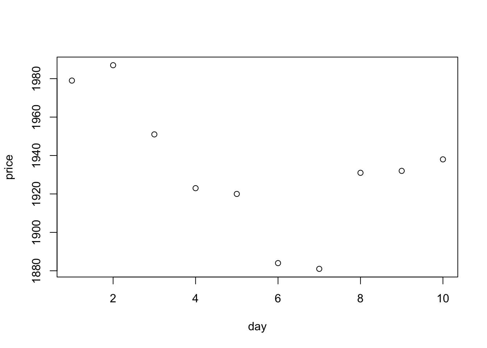
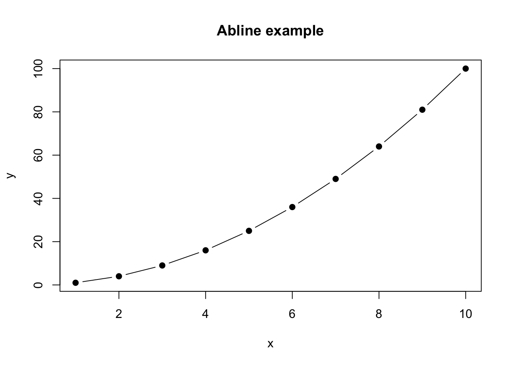

Week1 RStudio and R Basics (Revision)
R is a language and programming environment for statistical computing and graphics (graphs and plots), which offers an ‘Open Source’ (freely available) alternative for implementation of the S language, which is the usual language of choice when it comes to statistical computing. In other words, R is a freely available software environment which runs on Windows, MacOS and LINUX, that allows the user to conduct mathematical calculations, data manipulation, statistical computations and create graphical output.
RStudio is known as an integrated development environment (IDE) for R, which essentially provides much more user friendly access to R and its features. The figures below show the two environments separately. The first is the original R environment and the second is RStudio. Even from these simple graphics, you can see that RStudio provides a much more detailed user face, with a number of different ‘panels’ (discussed in more details later) for a range of different commands.
Figure 1.1: R Environment.
Figure 1.2: RStudio IDE.
1.1 How to install R and RStudio
Installing R and RStudio has to be done in two separate steps:
Firstly, we need to install the original R software for your specific operating system (Windows, Mac or LINUX) from https://cran.ma.imperial.ac.uk/. Once this is installed, you are able to open R and you should be met with a screen similar to the left hand side in Figure:1.1, above. At this point, you are now able to use R and all its features completely. However, as mentioned in the previous section, it is usually preferable to work with RStudio due to its user friendly interface.
To download the free version of RStudio, visit [https://rstudio.com/products/rstudio/download/] and download ‘RStudio Desktop (Free)’. Once downloaded, you will be able to open RStudio and should see a similar screen to that of Figure:1.2. Keep in mind that the image(s) above may be running older versions than the one you are using. Once you have downloaded RStudio, I recommend you only ever use R through this platform, so there is no need to open the original R software.
Note that in order to use R through the RStudio environment, you must first download the original R software. However, you can use R without downloading RStudio but I do not recommend this!
If you are using a university computer, you do not have to worry about the steps above as R and RStudio are already installed and can be found within the list of installed in programmes.
1.2 RStudio interface explained
When you open RStudio, you will notice that the environment has a number of different ‘panels’. You may find that your environment looks slightly different to the one in the figure above and may only have one larger panel on the left hand side rather than two separate ones. This difference will be explained later. To avoid confusion, your screen should look like the figure given below.
Figure 1.3: Orginal RStudio View.
Let us discuss each of the panels and some of their associated tabs, in a little more detail:
Console (Left panel) - The console is the panel you will interact with the most, as this is where you can type commands which can be ‘Run’ to produce some output.
Environment (Top panel, Tab 1) - The environment tab lists all active objects that have been ‘assigned’ (see below) and stored for later use. This is especially helpful when writing a long programme for which many variables need to be stored, as it allows you to refer back to previously defined objects.
History (Top right panel, Tab 2) - The history tab shows a list of all commands that have been run within the console so far. Again, this can prove useful when writing long programmes which may require re-use of certain commands or to double check what has already been run.
Files (Bottom right panel, Tab 1) - The file tab shows the folder of your ‘Working Directory’. That is, the folder in which R is directed to look for data sets etc. This tab looks similar to the equivalent folder in your PC/Mac folder window.
Plots (Bottom right panel, Tab 2) - The plots tabs allows you to view all of the graphs/plots you have created within that session. This proves helpful when you want to compare a number of plots.
Packages (Bottom right panel, Tab 3) - The packages tab provides access to a list of ‘Packages’ or ‘Add-ons’ needed to run certain functions. When RStudio is first started up, it will only have access to its basic packages which contain fundamental functions and tools. In order to conduct more sophisticated analysis or calculations it is usually required for you to install an extra package which contains these tools.
Help (Bottom right panel, Tab 4) - The help tab can be used to find additional information about certain functions, tools or commands within RStudio. You will find this to be a very important part of your programming experience and will be used constantly. We will discuss later on how to access help via a shortcut through the console.
1.3 Mathematical calculations
Now that we understand a little more about the setup of R and RStudio, we want to discuss what we can actually do in R. As previously mentioned, R is most notably used to conduct mathematical calculations, data manipulation, statistical computations and create graphical output but let us discuss each of these in a little more detail and give some practical examples you can try for yourself.
In its most basic form, R can be used as a large scale calculator. In contrast to an actual calculator, it can perform a variety of calculations quickly and easily, which would otherwise take a great deal of time, e.g. series summations and matrix multiplcation. In fact, there are many calculations that can be performed in R which would not be possible even with a scientific calculator.
1.3.1 Basic numerical calculations
If you simply type 5*3 into the ‘console’ (see above) and press enter you should receive the solution as an output which again appears in the console below your input:
Figure 1.4: Basic Multiplication.
In a similar way, you can perform a variety of other basic mathematical calculations:
7+3## [1] 109/3## [1] 315-2## [1] 136^3## [1] 216sqrt(100)## [1] 10Notice that some calculations, like the square root above, require knowledge of certain ‘functions’ e.g. sqrt() of which there exists hundreds in R’s base packages for you to use. Knowing what each of them are and how they work is part of the programming experience and will take time. We will talk more about ‘functions’, and how you can create your own in a later chapter.
Some other useful examples of pre-defined variables and functions are pi, exp() and log() which allow use of \(\pi\), \(e^x\), \(\ln(x)\) in calculations, respectively. For example, if we wanted to calculate \(e^{\ln(\pi)}\):
exp(log(pi))## [1] 3.1415931.3.2 More complicated calculations
Imagine that you want to find the sum of all the integers from \(1\) to \(1000\). To do this on a basic calculator would require you to physically type each integer in turn, adding them as you go along (assuming you do not know the series summation formula). However, in R, you can compute this with one simple function, i.e. sum() with argument 1:1000, which creates the sequence of numbers from \(1\) to \(1000\). To see this in action before performing this particular calculation, type 1:10 in the console and press enter:
1:10## [1] 1 2 3 4 5 6 7 8 9 10As you can see, the output is the required sequence of integers from \(1\) to \(10\). Returning to our original summation calculation, by inputting sum(1:1000) and pressing enter, R will first create the sequence from \(1\) to \(1000\) in a similar to above, then sum all of these values:
sum(1:1000)## [1] 500500Before we move on to discuss more advanced calculations that can be handled with R, let us take a moment to highlight the disadvantages of writing code directly in the console itself and introduce something known as an ‘R script’. In addition, we will also discuss how we can ‘assign’ values to variables which we can then recall at any point for use in calculation.
1.4 R script
So far, we have executed each line of code directly into the console itself, one line at a time, pressing enter and producing output each time. Although this works and produces the necessary output, it has numerous disadvantages. Firstly, if you make a mistake in the line of code, you cannot simply amend it and re-run it. Instead, you have to ‘re-type’ the code again on a new line without the mistake. Secondly, it requires you to execute every line of code once you have completed it. If you are writing a programme with hundreds of lines, this will become very frustrating especially if something goes wrong half way through and you have to re-write the entire code again. Finally, you cannot easily save your written code within the console to be re-opened and continued at a later date. In order to avoid all of these problems, from now on we type all of our code into an ‘R script’, from which we can execute the code into the console.
To open an R script, click the icon which looks like a blank piece of paper with the small green plus sign in the top right hand corner of your screen, then click R Script:
Figure 1.5: Opening an R script.
At this point, a new (blank) panel should open in the top left of your screen. This panel will now become the panel which you type all of your code (you no longer type into the console panel). Once you have typed your line of code, you can execute it (run it into the console) by simply highlighting the relevant code then clicking on the Run button as seen in Figure:@ref{fig:Script2} below.
Figure 1.6: Executing code from a script in R.
Note you can also simply go to the start or end of the line and press Run, you do not actually need to highlight it. This is only necessary if you want to Run more than one line at a time.
By executing code from the script, you avoid all the previously discussed problems. That is, if you have a made a mistake in your code, which you will notice once executed, you now simply amend this in the script and re-run it which is much simpler than re-writing the entire code. Moreover, you do not actually have to execute any code until you desire. Think of the script as a notebook which you can keep typing in and can run code from whenever you wish. Finally, and most importantly, you can save the script file and re-open this at a later date to continue working on and/or send to a colleague. You do this in the normal way as if saving a standard document in Word or other software.
1.5 Assigning variables
Recall the earlier example where we calculated the sum of values from \(1\) to \(1000\). Although relatively straight forward, typing this code out each time we would like to use the result becomes tedious and is, in fact, unnecessary in R. Instead, R allows us to ‘assign’ a value, vector, matrix, function etc., to a variable so we can recall that particular quantity at any point by simply typing the variable itself. For example, instead of repeatedly typing sum(1:1000) or the result itself {r} sum(1:1000), we could ‘assigned’ this to the variable \(x\) using the ‘assignment operator’ <-, which allowed us to reuse the value later on by simply typing \(x\):
x <- sum(1:1000)
x## [1] 500500Note, however, that when we used the assignment operator it did not print the output itself, which would have happened if we had simply ran the code without assignment. This is the reason we then typed the variable \(x\) in the next line of the console, as this will now print as output whatever quantity is saved to the variable \(x\), in this case the sum of values from \(1\) to \(1000\). If you would actualy like to do both things at the same time, i.e, assign and print the output, you should put the assignment code in brackets:
(x <- sum(1:1000))## [1] 500500x## [1] 500500Finally, when a variable is assigned, the variable name and the type of quantity that has been assigned to it, will be stored in the ‘environment’ tab/panel. In this case, the variable \(x\) was assigned and the quantity assigned to them takes the form of a ‘numeric’ (num) value.
1.6 Vectors and matrices
As we have already briefly seen within the summation calculations above, R can also easily create collections of values in a single object, known as a vector, which can then be used in a variety of calculations, including vector and/or matrix type calculations themselves.
1.6.1 Vectors
There are in fact a number of different ways to create ‘vectors’ of values in R, so let us discuss some of the most common.
- The most general way is to use the ‘combine’ or ‘concatenate’ function
c(). This function combines a series of individual values and then glues them together to form a vector
c(1, 2, 5, 9, 15)## [1] 1 2 5 9 15c(-3, 3, -1, 0, 10, 5, 2, -100, 25)## [1] -3 3 -1 0 10 5 2 -100 25Although this is the most general method, it does require you to type out each value individually, not ideal if you want a vector containing \(1000+\) values.
- We have already seen another example of how to create a vector using the semi-colon syntax
1:1000. However, this is quite specific and only works for creating vectors which form a series of increasing/decreasing values:
1:10## [1] 1 2 3 4 5 6 7 8 9 1020:5## [1] 20 19 18 17 16 15 14 13 12 11 10 9 8 7 6 5The more general version of this method is to create a ‘sequence’ of values with an initial starting point, an end value and specifying the increments between the values:
seq(from=5, to=50, by = 5)## [1] 5 10 15 20 25 30 35 40 45 50- The third way requires a little more thought and experience but will become second nature once you get going. It relies on you understanding how R deals with vectors in calculations, which you can then take advantage of (see below).
1.6.2 Vector calculations
Using vectors in calculations is just as simple as with scalar values, but will not necessarily produce the output you might first expect in some cases. Let us start by looking at some simply addition and subtraction of vectors which we assign as different variables:
a <- c(1, 2, 3, 4, 5, 6, 7, 8, 9, 10)
b <- 11:20
a+b## [1] 12 14 16 18 20 22 24 26 28 30b-a## [1] 10 10 10 10 10 10 10 10 10 10Notice that the calculations in the above have been done ‘element-wise’. This is a very important observation as it is a characteristic of R vector calculations that will come in handy throughout your coding life and should be utilised as much as possible. Let us look at a few more examples:
a*b## [1] 11 24 39 56 75 96 119 144 171 200b/a## [1] 11.000000 6.000000 4.333333 3.500000 3.000000 2.666667 2.428571
## [8] 2.250000 2.111111 2.000000a^2## [1] 1 4 9 16 25 36 49 64 81 100a^b## [1] 1.000000e+00 4.096000e+03 1.594323e+06 2.684355e+08 3.051758e+10
## [6] 2.821110e+12 2.326305e+14 1.801440e+16 1.350852e+18 1.000000e+20Once again, these have all been calculated element-wise! What happens if the vectors are not of the same length? In this case, R will automatically loop around the shorter vector and start using the values again from the start until it has used enough to match the length of the second vector. Let us take a look at a quick example to see how this works in practice:
vec1 <- c(1,2,3,4)
vec2 <- c(1,2,3,4,5,6,7)
length(vec1)## [1] 4length(vec2)## [1] 7vec1 + vec2## Warning in vec1 + vec2: longer object length is not a multiple of shorter object
## length## [1] 2 4 6 8 6 8 10This is a perfect example of why you need to be very careful when writing code. Just because you have (possibly) made a mistake, R will not always realise you have and execute a calculation anyway.
1.6.3 Vector strings
R is not all about numerical values. As it is a tool for statistical analysis, data can come in many shapes and sizes including words (known in R as character strings) or logical values, i.e, TRUE or FALSE. We will talk more about the latter values in the next few weeks but it is worth discussing ‘string’ here.
A ‘character string’ is simply a word or combination of letters that you would like R to understand as such. To create or include a string, you need to use quotation marks:
"Hello World"## [1] "Hello World"Once you put quotation marks around something, R automatically recognises this as a string and will not try to perform and type of operation to this. This is even possible with numerical values:
"10 is a numerical value"## [1] "10 is a numerical value"As a small example, try adding together the strings “10” and “11” in R. Notice that because we have defined the values as strings, R cannot perform addition with them:
str("10")## chr "10"str(10)## num 10In exactly the same way as we have seen above, it is possible to create vectors of strings. This is very helpful when you want to name a bunch of objects, rows/columns in data tables or when they represent data points themselves, e.g., geographical regions etc.
c("York", "London", "Liverpool", "Birmingham")## [1] "York" "London" "Liverpool" "Birmingham"1.6.4 Vector extraction
One final tool of note for vectors is the method of extracting certain values. For example, let us again consider the vector of values from \(1\) to \(1000\). Now assume that you want to ‘extract’ the first 10 values from this vector, i.e. the values \(1\) to \(10\). To extract values from a vector, you can use square brackets [] immediately after the brackets to inform R of which elements you want to extract:
x <- 1:1000
x[1:10] # Note that this extracts the first 10 elements, not the elements with value 1:10## [1] 1 2 3 4 5 6 7 8 9 10y <- seq(from = 10, to = 20, by = 0.5)
y[1:10]## [1] 10.0 10.5 11.0 11.5 12.0 12.5 13.0 13.5 14.0 14.5z <- y[c(1,3,5,7,9)] # This extracts the 1st, 3rd, 5th, 7th and 9th elements
z## [1] 10 11 12 13 14y[-(1:10)] # The negative sign means extract everything except the specified elements## [1] 15.0 15.5 16.0 16.5 17.0 17.5 18.0 18.5 19.0 19.5 20.0Notice the comments in the above code? This can be done using the hashtag symbol and is a habit I would strongly recommend you start to implement from the off. I have given more information about this in the supplementary chapter (Additional Tips) at the end of these notes.
To give you a little more context to how/where this might be helpful, take a look at the following simple example about with respect to heights of individuals in a given classroom:
Example 1.1 Assume that the height (in cm) of a 80 individuals in a given classroom were measured and recorded in the variable height_data given below:
height_data## [1] 176.5376 153.1206 162.8550 163.4545 156.2094 177.8216 188.9456 156.5720
## [9] 183.9388 169.7159 182.2891 174.6550 158.3313 167.4225 165.9970 170.9213
## [17] 167.0113 157.5113 167.2029 178.5820 192.4222 186.3118 156.8121 171.8655
## [25] 166.6595 199.0109 168.0010 126.1979 175.2111 142.0866 160.8826 178.2870
## [33] 162.5954 158.1938 193.6896 149.8617 169.3097 178.7695 192.3704 207.3386
## [41] 174.7369 181.5020 164.8878 181.1685 144.7308 184.0801 175.1193 163.1395
## [49] 156.2338 164.7766 183.6746 154.2742 154.5547 168.8006 176.4721 171.6058
## [57] 164.6311 159.7086 172.7480 187.7487 189.8938 194.7410 192.1164 155.1451
## [65] 180.8402 166.7129 169.5684 136.6031 179.9027 179.7961 147.1785 163.1706
## [73] 172.7360 189.5438 214.1744 177.0150 218.8880 156.5359 147.6998 176.7713Now assume that we wanted to find out the average height of the 20 smallest individuals in the classroom:
(height_sorted <- sort(height_data))## [1] 126.1979 136.6031 142.0866 144.7308 147.1785 147.6998 149.8617 153.1206
## [9] 154.2742 154.5547 155.1451 156.2094 156.2338 156.5359 156.5720 156.8121
## [17] 157.5113 158.1938 158.3313 159.7086 160.8826 162.5954 162.8550 163.1395
## [25] 163.1706 163.4545 164.6311 164.7766 164.8878 165.9970 166.6595 166.7129
## [33] 167.0113 167.2029 167.4225 168.0010 168.8006 169.3097 169.5684 169.7159
## [41] 170.9213 171.6058 171.8655 172.7360 172.7480 174.6550 174.7369 175.1193
## [49] 175.2111 176.4721 176.5376 176.7713 177.0150 177.8216 178.2870 178.5820
## [57] 178.7695 179.7961 179.9027 180.8402 181.1685 181.5020 182.2891 183.6746
## [65] 183.9388 184.0801 186.3118 187.7487 188.9456 189.5438 189.8938 192.1164
## [73] 192.3704 192.4222 193.6896 194.7410 199.0109 207.3386 214.1744 218.8880smallest.20 <- height_sorted[1:20]
mean(smallest.20)## [1] 151.37811.6.5 Exercises
- In R, create two vectors containing the numbers (5, 6, 7, 8) and (2, 3, 4). Assign these vectors to the variables u and v respectively.
- Without using R, write down or think about what you expect the following results to produce:
- add u and v
- subtract v from u
- multiply u by v
- divide u by v
- raise u to the power of v
- Using R, check if your initial thoughts were correct.
Solution
u <- c(5, 6, 7, 8)
v <- c(2, 3, 4)
# a)
u + v## Warning in u + v: longer object length is not a multiple of shorter object
## length## [1] 7 9 11 10# b)
u - v ## Warning in u - v: longer object length is not a multiple of shorter object
## length## [1] 3 3 3 6# c)
u*v## Warning in u * v: longer object length is not a multiple of shorter object
## length## [1] 10 18 28 16# d)
u/v## Warning in u/v: longer object length is not a multiple of shorter object length## [1] 2.50 2.00 1.75 4.00# e)
u^v## Warning in u^v: longer object length is not a multiple of shorter object length## [1] 25 216 2401 64- Create the vector of values \((1, 1.5, 2, 2.5, 3, 3.5, 4, 4.5, 5)\) using the following two methods:
- Using the
seq()function - Using only the semi-colon syntax and element-wise calculations.
Solution
# i)
seq(from = 1, to = 5, by = 0.5)## [1] 1.0 1.5 2.0 2.5 3.0 3.5 4.0 4.5 5.0# ii)
(2:10)/2## [1] 1.0 1.5 2.0 2.5 3.0 3.5 4.0 4.5 5.0- Use R to create a vector containing all the square numbers from 1 up to and including 10,000 (\(100^2\)).
Solution
(1:100)^2## [1] 1 4 9 16 25 36 49 64 81 100 121 144
## [13] 169 196 225 256 289 324 361 400 441 484 529 576
## [25] 625 676 729 784 841 900 961 1024 1089 1156 1225 1296
## [37] 1369 1444 1521 1600 1681 1764 1849 1936 2025 2116 2209 2304
## [49] 2401 2500 2601 2704 2809 2916 3025 3136 3249 3364 3481 3600
## [61] 3721 3844 3969 4096 4225 4356 4489 4624 4761 4900 5041 5184
## [73] 5329 5476 5625 5776 5929 6084 6241 6400 6561 6724 6889 7056
## [85] 7225 7396 7569 7744 7921 8100 8281 8464 8649 8836 9025 9216
## [97] 9409 9604 9801 10000- The vectors
LETTERSandlettersare already pre-built into R’s base-package and contain the capital and lower-case versions of the letters from the English alphabet (Try it by simply running eitherLETTERSorlettersinto R).
- Create a vector containing the first 10 letters of the English alphabet in Capitals.
- Now, using your solution from the previous part, create a new vector of the form:
\[\begin{equation*}
(A, A, A, B, B, B, C, C, C, \ldots, J, J, J).
\end{equation*}\]
[Hint: Try looking into the
rep()function and how it works]
Solution
# i)
(letters.10 <- LETTERS[1:10])## [1] "A" "B" "C" "D" "E" "F" "G" "H" "I" "J"# ii)
rep(letters.10, each = 3)## [1] "A" "A" "A" "B" "B" "B" "C" "C" "C" "D" "D" "D" "E" "E" "E" "F" "F" "F" "G"
## [20] "G" "G" "H" "H" "H" "I" "I" "I" "J" "J" "J"1.6.6 Matrices
In the previous section, we discussed how to create vectors of values. However, R can just as easily deal with matrices and matrix calculations; a life-saver compared to doing them by hand as you may have had to do so far in other modules. As with vectors, there are actually a number of different ways to create matrices in R, but let us begin by looking at the matrix() function and using the ‘Help’ command, via the question mark symbol, i.e., ?matrix() (alternatively via the help tab) for more information. Doing so shows that the general form of the matrix() function is given by
matrix(data = , nrow = , ncol = , byrow = , dimnames = )
where each of the arguments are defined as follows:
- data - This is a vector of data that is used to create the elements of the matrix itself
- nrow - This specifies the number of rows desired for the matrix
- ncol - This specifies the number of columns desired for the matrix.
- byrow - This argument instructs R on how to fill the matrix using the data vector. If it takes the value of
TRUE, then the elements will be filled row-wise, i.e. will first fill all the first row, then move down to second row etc, and ifFALSE, the vice-versa. - dimnames - This argument allows you to assign names to the rows and columns of the matrix.
Note that if either nrow or ncol is not given, then R will try to guess the required value(s) and will fill any unspecified elements by repeating the original data vector until filled.
Example 1.2 Consider the following two matrices
\[\begin{equation*} A = \left( \begin{array}{cc} 3 & 4 \\ 6 & 2 \end{array} \right) \quad \text{and} \quad B = \left( \begin{array}{cc} 1 & 5 \\ 4 & 6 \end{array} \right). \end{equation*}\]
These can created in R using the matrix() function as follows:
(A <- matrix(c(3,6,4,2), nrow = 2, ncol = 2, byrow = TRUE))## [,1] [,2]
## [1,] 3 6
## [2,] 4 2(B <- matrix(c(1,4,5,6), nrow = 2, ncol = 2, byrow = TRUE))## [,1] [,2]
## [1,] 1 4
## [2,] 5 61.6.7 Matrix calculations
Now that you have your matrices created and assigned as variables \(A\) and \(B\), you can use them in calculations:
A+B## [,1] [,2]
## [1,] 4 10
## [2,] 9 8B-A## [,1] [,2]
## [1,] -2 -2
## [2,] 1 4A*B## [,1] [,2]
## [1,] 3 24
## [2,] 20 12A/B## [,1] [,2]
## [1,] 3.0 1.5000000
## [2,] 0.8 0.3333333** BE CAREFUL!** Notice that all the calculations have been done element-wise again. As with the vectors, this turns out to be a very helpful tool within R although it might not appear so just now.
If you want to apply ‘matrix-multiplication’ you have to use a slightly different command:
A%*%B## [,1] [,2]
## [1,] 33 48
## [2,] 14 281.6.8 Matrix operations
There are, of course, an array of other calculations you may apply when working with matrices e.g, determinant, inverse, transpose etc. Rather than showing each of these in turn, in this section we simply provide a table of the different matrix/vector operations that can be used in R, with a brief description of what each of them are used for. We suggest that you try these out for yourself in order to familiarise yourself and understand how they work and don’t forget to use the ‘Help’ function if you’re unsure. Once you have mastered these operations, have a go at the exercises in the next section.
In the following table, A and B denote matrices, whilst x and b denote vectors:
| Operation | Description |
|---|---|
A + B |
Element-wise sum |
A - B |
Element-wise subtraction |
A * B |
Element-wise multiplication |
A %*% B |
Matrix multiplication |
t(A) |
Transpose |
diag(x) |
Creates diagonal matrix with elements of x on the main diagonal |
diag(A) |
Returns a vector containing the elements of the main diagonal of A |
diag(k) |
If k is a scalar, this creates a \((k x k)\) identity matrix |
solve(A) |
Inverse of A where A is a square matrix |
solve(A, b) |
Solves for vector x in the equation \(A\vec{x}\vec{b}\) (i.e. \(\vec{x} = A^{-1}\vec{b}\)) |
cbind(A,B,...) |
Combines matrices(vectors) horizontally and returns a matrix |
rbind(A,B,...) |
Combines matrices(vectors) vertically and returns a matrix |
rowMeans(A) |
Returns vector of individual row means |
rowSums(A) |
Returns vector of individual row sums |
colMeans(A) |
Returns vector of individual column means |
colSums(A) |
Returns vector of individual column sums |
** Recall that vectors are just particular cases of matrices with either one row or one column. Therefore, it is no surprise that you can create a vector using the matrix function. To do this, simply set the nrow or ncol argument equal to 1, depending on format of vector you want (row or column vector).**
The only slight restriction to simply using the c() function, is that R will always saves the vector as a column vector. We point out here that this might not be so clear when you first define the vector in R, as the output given in the console looks like the form of a row vector. To overcome this, you can simply turn the column vector (default when using combine function in R) into a row vector by performing the transpose (see table above) of the original vector.
1.6.9 Matrix extraction
In a similar way to how you we can extract values from vectors, we can extract values from matrices, this is also done with the square brackets [], however it now takes two different arguments, one for the specified row(s) and the other for the column(s) which you would like to extract.
A## [,1] [,2]
## [1,] 3 6
## [2,] 4 2A[1,1]## [1] 3A[2,1]## [1] 4A[c(1,2), 1]## [1] 3 4A[,1] # The blank space mean every row## [1] 3 41.6.10 Exercises
Using R, create the following matrices and vectors \[ A=\left[ \begin{array}{ccc} 1 & 4 & 7 \\ 2 & 5 & 8 \\ 3 & 6 & 8 \end{array}\right] \qquad B=\left[ \begin{array}{ccc} 1 & 2 & 3 \\ 4 & 5 & 6 \\ 7 & 8 & 8 \end{array}\right] \qquad D=\left[ \begin{array}{cc} 1 & 3 \\ 4 & 6 \\ 7 & 9 \end{array}\right] \qquad \vec{b}=\left[ \begin{array}{c} 3 \\ 6 \\ 9 \end{array}\right] \]
Solution
vals <- c(1, 2, 3, 4, 5, 6, 7, 8, 8)
(A <- matrix(vals, nrow = 3, byrow = F))## [,1] [,2] [,3]
## [1,] 1 4 7
## [2,] 2 5 8
## [3,] 3 6 8(B <- matrix(vals, nrow = 3, byrow = T))## [,1] [,2] [,3]
## [1,] 1 2 3
## [2,] 4 5 6
## [3,] 7 8 8(D <- matrix(c(1, 3, 4, 6, 7, 9), nrow = 3, byrow = T))## [,1] [,2]
## [1,] 1 3
## [2,] 4 6
## [3,] 7 9(b <- matrix(c(3, 6, 9), nrow = 3))## [,1]
## [1,] 3
## [2,] 6
## [3,] 9- Using the objects defined above, perform the following operations and check if the result is what you would expect:
- \(A + B\) element-wise sum
- \(A \times B\) element-wise multiplication
- \(A \times B\) matrix multiplication
- \(B \times D\) matrix multiplication
- \(B \times \vec{b}\) matrix multiplication
Solution
# i)
A+B## [,1] [,2] [,3]
## [1,] 2 6 10
## [2,] 6 10 14
## [3,] 10 14 16# ii)
A*B## [,1] [,2] [,3]
## [1,] 1 8 21
## [2,] 8 25 48
## [3,] 21 48 64# iii)
A%*%B## [,1] [,2] [,3]
## [1,] 66 78 83
## [2,] 78 93 100
## [3,] 83 100 109# iv)
B%*%D## [,1] [,2]
## [1,] 30 42
## [2,] 66 96
## [3,] 95 141# v)
B%*%b## [,1]
## [1,] 42
## [2,] 96
## [3,] 141- Compute the transpose of matrix A and of matrix D.
Solution
t(A)## [,1] [,2] [,3]
## [1,] 1 2 3
## [2,] 4 5 6
## [3,] 7 8 8t(D)## [,1] [,2] [,3]
## [1,] 1 4 7
## [2,] 3 6 9- Create a matrix with the elements 1, 2, 3, 4 in the main diagonal and zeros in the off diagonal elements.
Solution
diag(1:4, nrow = 4)## [,1] [,2] [,3] [,4]
## [1,] 1 0 0 0
## [2,] 0 2 0 0
## [3,] 0 0 3 0
## [4,] 0 0 0 4- Define a vector which consists of elements from the main diagonal of matrix B.
Solution
diag(B)## [1] 1 5 8- Build an identity matrix with dimension 10.
Solution
diag(1, nrow = 10)## [,1] [,2] [,3] [,4] [,5] [,6] [,7] [,8] [,9] [,10]
## [1,] 1 0 0 0 0 0 0 0 0 0
## [2,] 0 1 0 0 0 0 0 0 0 0
## [3,] 0 0 1 0 0 0 0 0 0 0
## [4,] 0 0 0 1 0 0 0 0 0 0
## [5,] 0 0 0 0 1 0 0 0 0 0
## [6,] 0 0 0 0 0 1 0 0 0 0
## [7,] 0 0 0 0 0 0 1 0 0 0
## [8,] 0 0 0 0 0 0 0 1 0 0
## [9,] 0 0 0 0 0 0 0 0 1 0
## [10,] 0 0 0 0 0 0 0 0 0 1- Compute the inverse of matrix A. Check if \(A \times A^{-1}=I_3\).
Solution
(A.inv <- solve(A))## [,1] [,2] [,3]
## [1,] -2.666667 3.333333 -1
## [2,] 2.666667 -4.333333 2
## [3,] -1.000000 2.000000 -1A%*%A.inv # Note that this has worked there are just some rounding errors in the output.## [,1] [,2] [,3]
## [1,] 1.000000e+00 -1.776357e-15 8.881784e-16
## [2,] 3.552714e-15 1.000000e+00 0.000000e+00
## [3,] 0.000000e+00 0.000000e+00 1.000000e+00- Find the solution \(\vec{x} = (x_1, x_2, x_3)^\top\), where \[ \left\{ \begin{array}{ccl} 6.5 &=& x_1 + x_2 + x_3 \\ 9 &=& 0.5 x_1 + 2 x_2 + x_3\\ 11 &=& 3 x_1 + x_2 + 2 x_3 \end{array}\right. \]
Solution
(Mat <- matrix(c(1, 1, 1, 0.5, 2, 1, 3, 1, 2), nrow = 3, byrow = T))## [,1] [,2] [,3]
## [1,] 1.0 1 1
## [2,] 0.5 2 1
## [3,] 3.0 1 2(Vec <- matrix(c(6.5, 9, 11), nrow = 3))## [,1]
## [1,] 6.5
## [2,] 9.0
## [3,] 11.0solve(Mat)%*%Vec # This is the solution to the simultaneous equations.## [,1]
## [1,] 1.0
## [2,] 3.0
## [3,] 2.5- Combine the matrices A and D, horizontally.
Solution
cbind(A, D)## [,1] [,2] [,3] [,4] [,5]
## [1,] 1 4 7 1 3
## [2,] 2 5 8 4 6
## [3,] 3 6 8 7 9- Combine the matrix A and the transpose of vector b vertically.
Solution
rbind(A, t(b))## [,1] [,2] [,3]
## [1,] 1 4 7
## [2,] 2 5 8
## [3,] 3 6 8
## [4,] 3 6 9- Compute the mean for each row of matrix A. Do the same for each column of matrix A.
Solution
rowMeans(A)## [1] 4.000000 5.000000 5.666667colMeans(A)## [1] 2.000000 5.000000 7.666667- Compute the sum for each row of matrix B. Do the same for each column of matrix B.
Solution
rowSums(B)## [1] 6 15 23colSums(B)## [1] 12 15 171.7 Plotting graphs
One of R’s major strengths is the ease with which well-designed, publication-quality plots can be produced and can include mathematical symbols and formulae where needed. The basic plotting function in R, located in its basic packages, is the so-called plot() function. In its simplest form, the plot() function allows you to plot two variables, say \(X\) and \(Y\), against each other as a scatter plot. For example, imagine we wanted to plot the following points \((x,y)\):
\[\begin{equation*}
(0,0), \,(1,2),\, (2,2),\, (3, 5),\, (4, 4),\, (6, 8),
\end{equation*}\]
as a scatter plot. Then, we could do this as follows:
X <- c(0,1,2,3,4,6)
Y <- c(0,2,2,5,4,8)
plot(X, Y)From the R plot above, you can see that R has simply taken the two vectors (X and Y) and plotted the values pairwise (as required) to create a basic scatter plot. That being said, the plot itself looks very basic and is not particularly aesthetic. This is because we have used the very basic structure for the plot() function. However, with a little alteration, this can be adapted to create something a little more exciting:

Figure 1.7: Example of Plot using plot().
The example above provides a small insight into the very basics of the plotting tools available in R. Let us know look at this function a little more closely. Using ?plot() we find that the plot() function has the general form:
plot(x, y, main = , xlab = , ylab= , type= , pch= , col= , cex= , bty = )
where each of the arguments are defined as follows:
x- Points to be plotted along the x-axisy- Corresponding points to plotted against the y-axis. Note that these values match-up element-wise the x values to create co-ordinate pairs \((x,y)\)main- Takes a character string and gives the plot a main titlexlab- Takes a character string and labels the x-axisylab- Takes a character string and labels the y-axistype- Takes a number of different character strings to define the type of plot desired, i.e. line, point etc. (see table below)- pch` - Takes a values and defines the shape each point should take, i.e. circle, square etc. (see table below)
col- Sets the colours of the points/lines in the plotcex- Takes a value and defines the size of the pointsbty- Takes a character string and sets the type of axes for the plot
A number of other arguments can be used to change the layout and format of the plot but will not be discussed here. If you are interested, search for the par() function in the ‘Help’ tab.
Example 1.3 Consider the followings prices on the equity index S&P500 for the last weeks:
day <- c(1:10)
price <- c(1979,1987,1951,1923,1920,1884,1881,1931,1932,1938)Using a combination of all the arguments in the above list, we can produce the following plots:
plot(day, price)
plot(day, price,
main="S&P 500",
xlab="Day",
ylab="Closing Price",
pch=19,
col=3,
type="p")
plot(day, price,
main="S&P 500",
xlab="Day",
ylab="Closing Price (£)",
pch="+",
col=2,
type="b",
bty="L")The table below gives a non-exhaustive list of some of the different options you can make when choosing arguments for your plots. To find more, search online:
type |
Description |
|---|---|
| “p” | points |
| “l” | lines |
| “b” | both |
| “c” | lines part alone of “b” |
| “h” | histogram like vertical lines |
| “s” | stair steps |
pch |
Description |
|---|---|
| 0 | square |
| 1 | circle |
| 2 | triangle |
| 4 | plus |
| 5 | cross |
| 6 | diamond |
bty |
Description |
|---|---|
| “o” | full box |
| “n” | no axes |
| “7” | top and right axes |
| “L” | bottom and left axes |
| “C” | top, bottom and right axes |
| “U” | bottom, left and right axes |
1.7.1 Adding to plots (lines, points etc.)
There will be many occasions where you wish to add another set of points, or some other plot to your original. This is usually the case when comparing two different sets of data or, for example, when wanting to draw a regression line through your data points. Again, R has a variety of pre-defined functions that allow you to do this with ease. However, those who are new to R will make the common mistake of trying to add a second plot to the original by using the plot() function for a second time. The plot() function (seen above) does not simply plot points or lines. The source code underpinning the plot() function first instructs R to create a separate window/panel, create a set of axes (designed based on the choice of bty as argument) create some axis labels then, finally, add the points or lines. Therefore, by executing the function again, you will find you produce a completely new plot rather than adding to the previous.
In order to add more graphics to the original plot, we instead have to use the functions points(), lines() and abline(). The points() and lines() functions work in a very similar to that of the plot() function in the sense that they take similar arguments. The only difference now, is that the function does not first create axes etc., but will simply plot the points/lines onto the most recent plot that was created. Note here that since the points() function can take type as an argument, it is actually possible to create line plots with this function (type = "l") instead of using the lines function. Remember, there are many ways to create the same output in R, it is down to you to decide which you prefer to use. Let’s add to the S&P example above, by also adding the FTSE prices during the same time period:
plot(day, price,
main="S&P 500",
xlab="Day",
ylab="Closing Price (£)",
pch="+",
col=2,
type="b",
bty="L")
ftse <- c(1960, 1960, 1950, 1931, 1918, 1890, 1900, 1910, 1905, 1935)
points(day, ftse,
col = "blue",
type="b",
pch="+")The abline() function, on the other hand, is slightly different. This function is used simply to create straight lines on your current plot. Using ?abline() we see it takes the form
abline(a, b, h= , v = , ... )
The arguments in this case are no longer data points like in the previous plotting functions but correspond to co-ordinates:
a- The value of the intercept for the straight lineb- The value for the gradient of the straight lineh- The y co-ordinate (intercept) for a horizontal linev- The x co-ordinate for the vertical line.
In addition to these arguments, you can also format the line type, width etc., but we will not discuss these again as they are simply aesthetic parameters which you can easily search for online.
plot(1:10, (1:10)^2,
main="Abline example",
ylab="y",
xlab="x",
type="b",
pch=19,)
plot(1:10, (1:10)^2,
main="Abline example",
ylab="y",
xlab="x",
type="b",
pch=19,)
abline(a=0,b=3, col = "red")
abline(a=0, b=6, col = "blue")
abline(h=60, lty = 2)
abline(v=6, lty = 3, lwd = 2, col = "orange")In addition to the plot function and its variety of options, we can implement other plotting functions such as hist() and boxplot(), which will be discussed in a later chapter in more details, to produce the best graphical representation of your data possible. Finally, although we discuss graphics using the basic plotting commands here, it is worth pointing out the popularity of a completely different package and set of functions, known as ggplot2, which makes the plotting experience even more exciting. We will not actually discuss this in these lecture notes, however, it is strongly advised that you familiarise yourself with this package and its associated functions using DataCamp. In fact, there are three excellent courses devoted to the subject which will be linked at the end of these notes.
1.7.2 Exercises
Consider the following formula to calculate the number of mortgage payment terms required to pay off a mortgage as a function of the principle amount (\(P\)), the monthly repayments (\(M\)) and the monthly interest (\(i\)): \[\begin{equation*} n = \frac{\ln\left(\frac{i}{\frac{M}{P}-i}+1 \right)}{\ln(1+i)} \end{equation*}\]
Using R, solve the following problems:
- Calculate the number of payments \(n\) for a mortgage with principle balance of £200,000, monthly interest rate of \(0.5\%\) and monthly payments of £2000.
Solution
P <- 200000
M <- 2000
i <- 0.005
(n <- log((i/((M/P)-i))+1)/log(1+i))## [1] 138.9757- Now construct a vector, named \(n\), of length 6 with the results of this calculation (in years) for a series of monthly payment amounts: \((2000, 1800, 1600, 1200, 1000)\).
Solution
M <- seq(from = 2000, to = 1000, by = -200)
(n <- log((i/((M/P)-i))+1)/log(1+i)) ## [1] 138.9757 162.5912 196.6559 251.1785 359.2470 Inf- Does the last value of \(n\) surprise you? Can you explain it?
Solution
As the monthly interest rate is 0.5%, this means we are required to pay 1,000 per month of interest. In this case, if we only pay 1,000 per month we never pay off any principal (only interest) and thus, will be repaying indefinitely.- Create a line plot for the values of \(n\) (excluding the last) against the different payment amounts. Give the plot a title, appropriate label names and make the points appear in blue.
Solution
plot(M[1:5], n[1:5],
main = "Overall repayment length vs. monthly repayment amounts",
xlab = "Monthly repayment amount",
ylab = "Total months to fully repay mortgage",
col = "blue",
type = "b")
1.8 DataCamp course(s)
- https://www.datacamp.com/courses/free-introduction-to-r (R Basics - Recommended)
- https://www.datacamp.com/courses/data-visualization-in-r (Plotting Data)
- https://www.datacamp.com/courses/data-visualization-with-ggplot2-1 (Plotting Data using ggplot - Recommended)
- https://www.datacamp.com/courses/data-visualization-with-ggplot2-2
- https://www.datacamp.com/courses/data-visualization-with-ggplot2-part-3